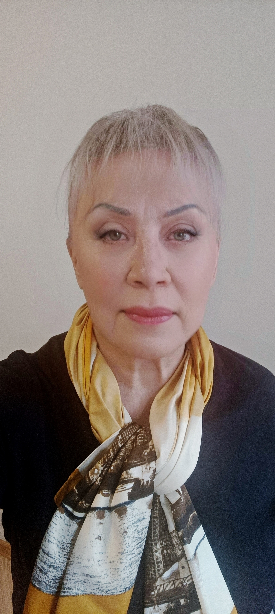

Ирина Андреева AI для работы и жизни
Освободите время от рутинных задач с помощью искусственного интеллекта
Помогаю разобраться, какие задачи можно передать AI, подобрать понятные инструменты и научиться ими пользоваться — спокойно, без сложных терминов и перегрузки.
- Для работы
- Для жизни
- Понятно и пошагово
- Реальные инструменты
Задачи копятся, а разобраться с AI всё некогда?
Необязательно становиться программистом.
Важно понять, какую задачу вы хотите решить.
- Нужно написать письмо или ответ клиенту
- Регулярно заканчиваются идеи для публикаций
- Трудно структурировать документы и заметки
- Хочется быстрее подготовить описание услуги
- Нужно распланировать поездку
- Хочется вести личный бюджет
- Нужно изучать иностранный язык
- Сложно выбрать подходящий AI-инструмент
- ChatGPT отвечает не так, как ожидалось
- Новые технологии вызывают растерянность
Что можно упростить
Две области, где AI действительно помогает
Для работы
Для жизни
С чего начать
Три понятных маршрута
Выберите то, что ближе к вашей ситуации прямо сейчас
Мне нужно разобраться
Я пока не понимаю, какой инструмент подойдёт.
Мне нужен готовый инструмент
Хочу использовать уже созданного помощника или мини-сервис.
Мне нужно решение под мою задачу
Мне нужен персональный инструмент или понятный способ решения конкретной задачи.
Инструменты
Инструменты для работы и жизни
Начинаю с небольших понятных решений, которые можно открыть и использовать прямо в браузере.
Помощник для создания контента
- Готовые идеи за пару минут
- Структура для недели контента
- Не нужно начинать с пустого листа
Личный бюджет
- Понятная структура расходов
- Расчёты в евро
- Визуализация прогресса к цели
Процесс
Как я работаю
Вы рассказываете о задаче
Мы определяем, что действительно стоит упростить
Я предлагаю понятный вариант решения
Мы создаём или настраиваем инструмент
Я показываю, как им пользоваться
Технология должна облегчать жизнь, а не становиться новой сложной обязанностью.

Я сама прошла путь от «ничего не понимаю» до собственных цифровых проектов
Меня зовут Ирина Андреева. Я изучаю искусственный интеллект с 2023 года, проходила обучение в Школе Ксении Барановой и применяла AI в собственном товарном бизнесе.
Сейчас я создаю новое направление — помогаю людям использовать искусственный интеллект в работе и жизни без страха, сложных слов и ощущения, что технологии предназначены только для программистов.
Моя сильная сторона — объяснять спокойно, понятно и пошагово. Именно поэтому появился бренд «Со_мной_легко».
Результаты
Первые результаты
Это новое направление, которое развивается на основе практического обучения, предпринимательского опыта и собственных работающих проектов.
Первый опубликованный помощник для контента
Работает в браузере, бесплатно и без регистрации — можно попробовать прямо сейчас.
Открыть помощник →Личный бюджет — второй AI-проект
Работающее приложение для учёта финансов в евро с визуализацией цели накоплений.
Открыть приложение →Первые созданные AI-проекты на GitHub
Все проекты с открытым кодом — можно посмотреть, как они устроены.
Профиль GitHub →Развитие проектов по версиям
Каждый инструмент улучшается на основе практики и обратной связи.
Продолжение обучения
Регулярно осваиваю новые подходы и применяю их в реальных задачах.
Это честный старт нового направления. Я показываю реальные проекты, а не обещаю то, чего пока нет.
В планах
Что появится дальше
Новые инструменты, над которыми я работаю или планирую работать
Библиотека проверенных промптов
Игра для изучения иностранного языка
Помощник по деловой переписке
Планировщик поездок
Новые боты
Мини-сервисы для работы и жизни
Вопросы
Часто задаваемые вопросы
Да. Я как раз работаю с людьми, которые только начинают. Мы разберём вашу задачу простым языком — без сложных терминов и давления. Главное — понять, что вы хотите упростить.
Вы рассказываете о задаче, которая отнимает время. Мы вместе определяем, можно ли её облегчить с помощью AI, и обсуждаем, с чего лучше начать. Никаких обязательств — только разговор и понятные рекомендации.
Не обязательно. Для многих задач хватает бесплатных инструментов. Если платная подписка действительно нужна — я объясню, зачем и как ею пользоваться с пользой.
Нет. Я помогаю и с рабочими задачами, и с повседневными: бюджет, планирование поездок, обучение, организация информации. AI полезен не только в бизнесе.
Конечно. Если задача повторяется и отнимает время — можно найти для неё понятное решение. Расскажите, что именно хотите упростить.
Готовый инструмент — это уже созданный помощник, которым можно пользоваться сразу. Персональное решение — инструмент, настроенный под вашу конкретную задачу, процесс и привычки.
Да, некоторые из моих инструментов работают прямо в браузере — бесплатно и без регистрации. Посмотрите раздел «Инструменты» на этом сайте.
Подписывайтесь на мой Telegram-канал — там я делюсь новыми инструментами, идеями и обновлениями проектов.
Расскажите, какая задача отнимает у вас время
На бесплатной консультации мы разберёмся, можно ли облегчить её с помощью AI и с чего лучше начать.